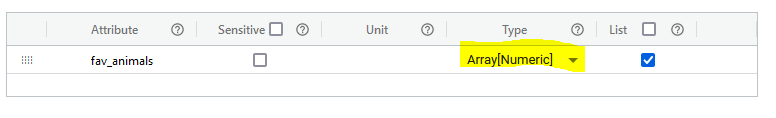
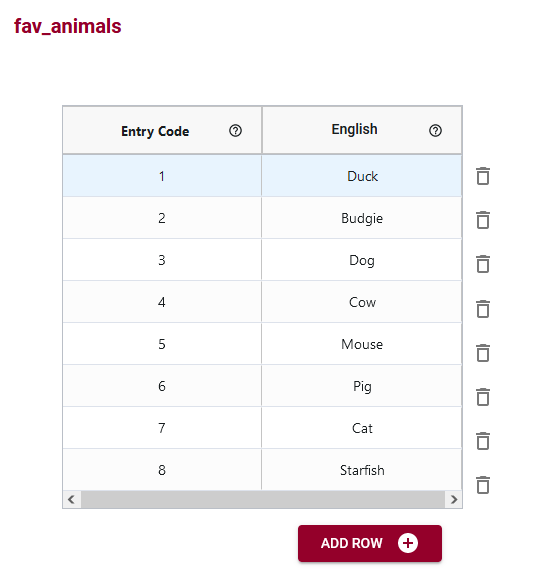
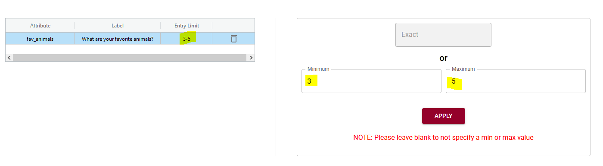

La cardinalité fait référence au nombre d'occurrences d'un élément. Pour un schéma OCA, la cardinalité vous permet de définir le nombre d'entrées pouvant être requises pour chaque attribut lorsque vous avez un type de données de tableau.
Lorsque vous autorisez un tableau d'entrées pour les données (par exemple dans une sélection multiple d'un questionnaire), vous souhaiterez peut-être inclure la cardinalité.
Par exemple, vous collectez des données d'enquête et vous avez une question sur les animaux préférés des gens. Vous souhaitez qu'ils choisissent entre 3 et 5 animaux dans une liste que vous fournissez.
Vous définissez d'abord le type de données comme étant un tableau. Il sera numérique car vous utiliserez des codes numériques pour vos choix d'animaux.
Vous écrivez votre libellé pour être votre question et dites à l'utilisateur qu'il devra choisir entre 3 et 5 animaux dans la description.

Vous créez une table de codes d'entrée où les nombres seront ce qui est enregistré dans votre table de données, et vous ajoutez des libellés anglais à chacun de vos animaux.
Vous ajouterez ensuite des règles de cardinalité selon lesquelles un minimum de 3 et un maximum de 5 animaux doivent être sélectionnés.
Pour la saisie des données, les enregistrements ressembleront à ceci (notez qu'il n'y a qu'un seul attribut dans cet exemple de schéma et que la table de données n'aura donc qu'une seule colonne de données - ce n'est pas la meilleure enquête au monde !).

Si vous souhaitez uniquement spécifier un maximum de 5 animaux sélectionnés, vous pouvez laisser le minimum vide. Alternativement, pour avoir un minimum de 3 animaux sélectionnés sans maximum, vous laisseriez le maximum vide.